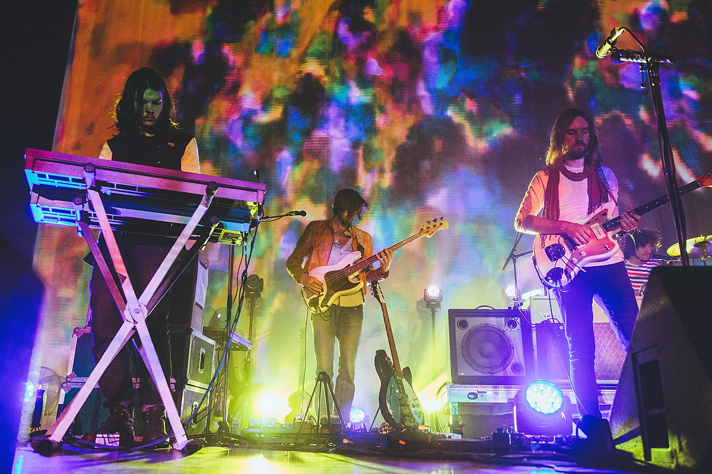
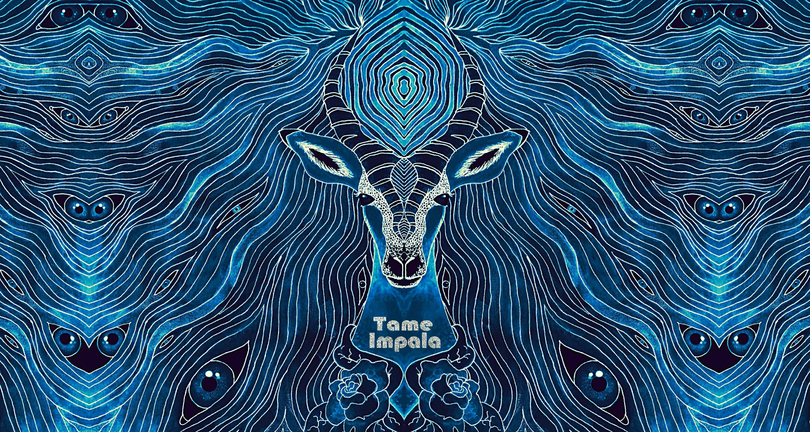
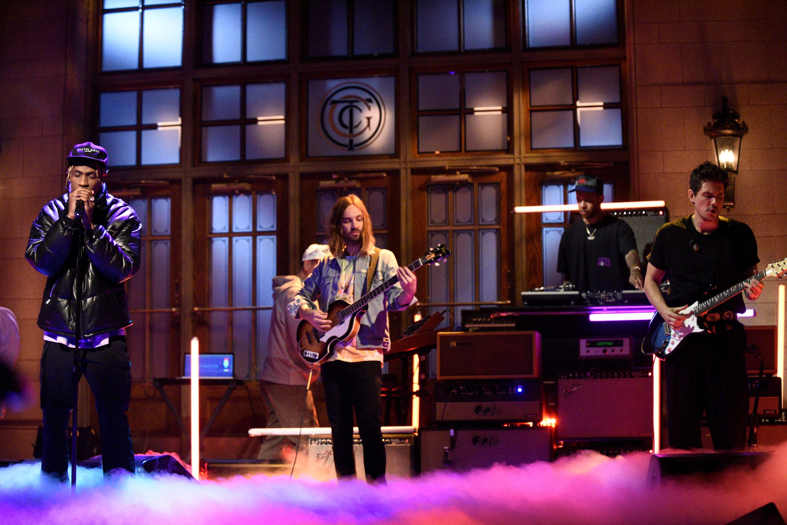

Tame Impala to australijski zespół grający muzykę psychodeliczną. Jest to projekt muzyczny Kevina Parkera,
który pisze i nagrywa niemal całą muzykę na albumach studyjnych samemu. Podczas wystąpień na żywo, oprócz
Kevina, na scenie można też zobaczyć Dominica Simpera (gitara i syntezatory), Jaya Watsona (syntezatory i
chórki), Juliena Barbagallo (perkusja) oraz Cama Avery (gitara basowa).

Nazwa zespołu odnosi się do impali - antylopy o średnich rozmiarach. Ich brzmienie jest inspirowane szeroką
gamą muzycznych wpływów (głównie psychodeliczny rok lat 60tych i 70tych). Lubią mówić o sobie jako "zespół
grający wyluzowany psychodeliczny rock kładący nacisk na oniryczne melodie".

Zespół podpisał międzynarodowy kontrakt płytowy z wytwórnią Modular Recordings w połowie 2008 roku, wydając
następnie debiutancką EPkę pod koniec 2008 roku. Ich pierwszy album studyjny, “InnerSpeaker”, został wydany
w 2010
roku i zebrał międzynarodowe uznanie wśród krytyków, podobnie jak kolejne albumy - “Lonerism” w 2012 oraz
“Currents” w 2015.
Po zatrważającym sukcesie “Currents”, Kevin zrobił sobie przerwę od nagrywania albumów studyjnych i zamiast
tego skupił się na kolaboracjach z innymi muzykami, głównie produkując innym znanym artystom utwory,
okazjonalnie też udzielając swojego wokalu. Po długim wyczekiwaniu, 14 lutego 2020 roku został wydany
czwarty album studyjny, "The Slow Rush".

Międzynarodowa trasa koncertowa albumu została niestety zawieszona w czasie z powodu pandemii. Kevin z
zespołem wrócili na scenę już rok później, grając w Stanach i Australii, a w 2022 roku odwiedzili Europę,
kończąc trasę Europejską koncertem na festiwalu On Air w Warszawie. Był to pierwszy raz, kiedy Tame Impala
wystąpiło na żywo w Polsce.